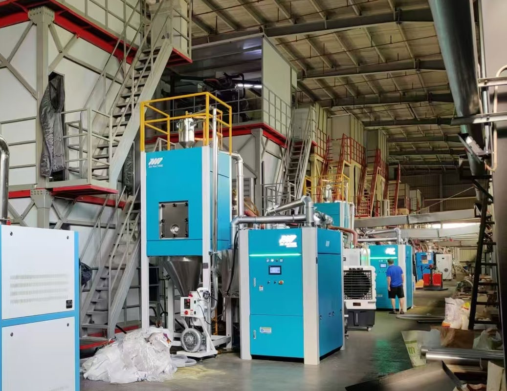
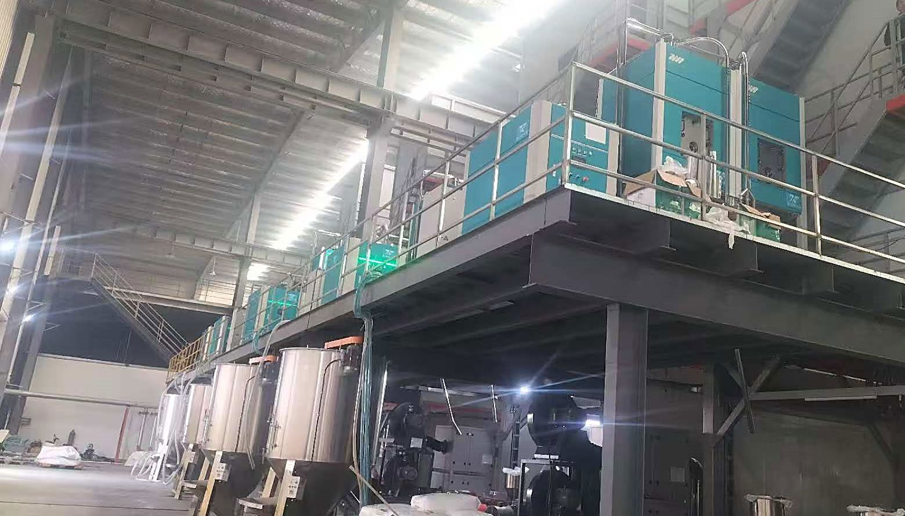

12+ 真实客户案例 · 覆盖 8 种物料 · 严谨的客户选择反复验证
2021 年首次订购，验证性能后每年增购。历时 4 年，完全平替原顶尖德国干燥机品牌，衔接金明 JINMING 主机生产 TPU 光伏膜。
TPU 光伏膜首订一套验证后，国内两大生产基地推动全系迭代蜂巢转轮计划。节省能耗、空间、人员维护，持续为企业创造效益。
TPU 多配方烘干2024 年展品，小容量双桶设计，上料 / 干燥 / 输送三合一。超低废品率表现，适合 PET 注塑产线。
PET 注塑配备冷凝水收集盒，保障 PET 瓶胚低废品率。锦冠时期产品，验证了分子筛技术在食品级 PET 应用的可靠性。
PET 模具特色定制一拖二 + 除尘 + 新款方形定制料桶。标配 24h 远程检测、智能分子筛切换、双温控检测等全方位故障检测系统。
PE 透气膜衔接巴顿菲尔产线制管。超低露点保障燃气管品质，在严苛的管材挤出工艺中表现稳定。
PE 燃气管16000L 料桶，10 吨级远程控制除湿干燥机。国内首台超大容量 PE 燃气管专用干燥设备，标志性项目。
PE 燃气管 · 超大型高低温干燥 / 冷却 / 除油 / 除味 / 除粉 / 输送 / 均化 / 称重 / 混合——九大功能一站式完成。定制苹果绿色外观。
PA 工程塑料Sigma Jin 系列模块化除湿机，RCOS 远程控制系统，自动控制气流。可扩展模块化设计，隐藏式料桶门。包含集中干燥 + 搅拌料桶两套设备。
PLA 生物基材料HBM320 型，结晶搅拌定制设计。针对 PBAT 可降解树脂特性，防止结块，保障结晶和干燥效果。
PBAT 可降解树脂一拖二 + 除油 + 上料集成，出料口带搅拌、干燥风补气。针对光学级 PMMA 亚克力材料无晶点要求设计。
PMMA 光学级2021 年首次订购，验证性能后每年增购。历时 4 年，完全平替原顶尖德国干燥机品牌，衔接金明 JINMING 主机生产 TPU 光伏膜。
TPU 光伏膜首订一套验证后，国内两大生产基地推动全系迭代蜂巢转轮计划。节省能耗、空间、人员维护，持续创造效益。
TPU 多配方烘干2024 年展品，小容量双桶设计，上料 / 干燥 / 输送三合一。超低废品率表现，适合 PET 注塑产线。
PET 注塑配备冷凝水收集盒，保障 PET 瓶胚低废品率。锦冠时期产品，验证了分子筛技术在食品级 PET 应用的可靠性。
PET 模具特色定制一拖二 + 除尘 + 新款方形定制料桶。标配 24h 远程检测、智能分子筛切换、双温控检测。
PE 透气膜衔接巴顿菲尔产线制管。超低露点保障燃气管品质，在严苛的管材挤出工艺中表现稳定。
PE 燃气管16000L 料桶，10 吨级远程控制除湿干燥机。国内首台超大容量 PE 燃气管专用干燥设备。
PE 燃气管 · 超大型高低温干燥 / 冷却 / 除油 / 除味 / 除粉 / 输送 / 均化 / 称重 / 混合——九大功能一站式完成。定制苹果绿色外观。
PA 工程塑料Sigma Jin 系列模块化除湿机，RCOS 远程控制，自动控制气流，可扩展模块化，隐藏式料桶门。包含集中干燥 + 搅拌料桶。
PLA 生物基材料HBM320 型，结晶搅拌定制设计。针对 PBAT 可降解树脂特性，防止结块。
PBAT 可降解树脂一拖二 + 除油 + 上料集成，出料口带搅拌、干燥风补气。针对光学级 PMMA 无晶点要求设计。
PMMA 光学级真实设备运行实拍

